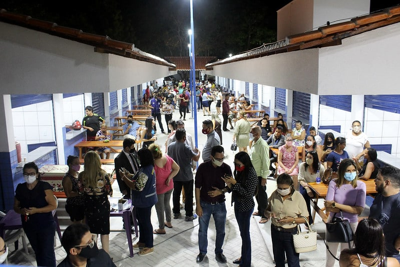
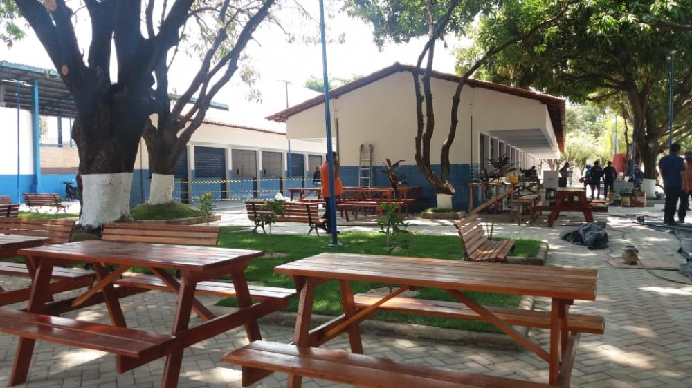
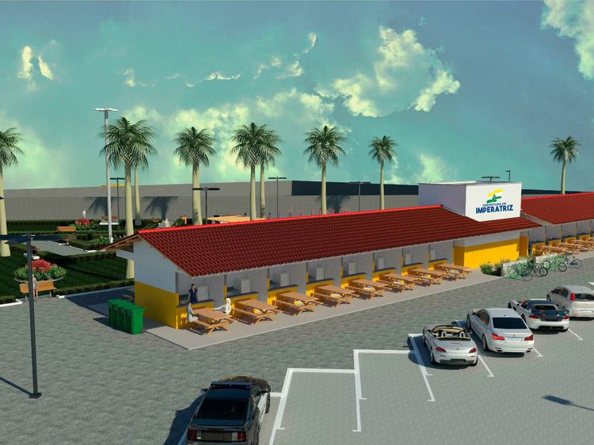
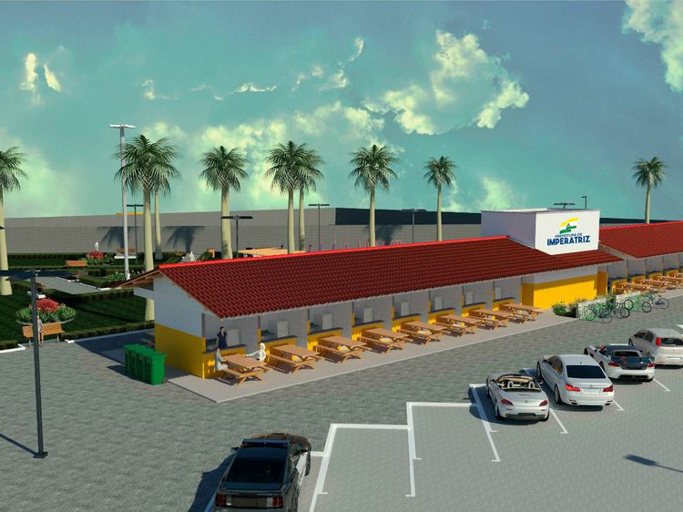

Venha nos fazer uma visita
Um Centro de Comercialização de Produtos Comestíveis, conhecido como Panelódromo, empreendimento entregue à população do município neste mês, contou com investimentos de R$ 1,5 milhão do Governo Federal, por meio da Companhia de Desenvolvimento dos Vales do São Francisco e do Parnaíba (Codevasf), vinculada ao Ministério do Desenvolvimento Regional. Além de ajudar a impulsionar o desenvolvimento regional e a gerar emprego e renda, o novo espaço também promete aquecer o turismo na região. O Centro de Comercialização de Produtos Comestíveis foi construído em uma área de 3 mil metros quadrados, na antiga Praça de Tiradentes, no centro do município. O Presidente Jair Bolsonaro e o ministro do Desenvolvimento Regional, Rogério Marinho, visitaram o local nesta quinta-feira (29). Rogério Marinho lembrou dos investimentos do Governo Federal no estado do Maranhão.
Trata-se de um sonho que se torna realidade. A comunidade terá um espaço acolhedor para saborear da nossa culinária popular, a tradicional panelada, e os vendedores de comida um ambiente com toda estrutura para trabalhar. Acreditamos no potencial desta categoria que tem papel importante para o município...
-Lenise Ferreira.Galeria
  
